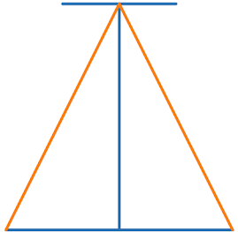
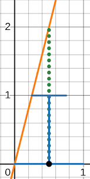
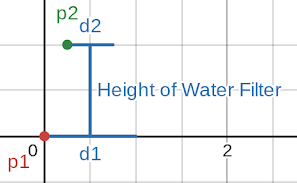
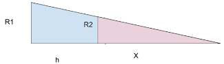

This is a website to find the volume and surface area of a cone packaging a water filter.
Enter height (in.):
Enter r1 (in.):
Enter r2 (in.):
Cone Height:
Cone Base Area:
Volume:
Last year, in seventh grade, we were given a project where we had to find different ways to package a water filter. Students were asked to compare materials for environmental friendliness, along with other advantages and disadvantages. Then, students compared the volumes and surface area of different 3D shapes they could use to package their water filters. Using what they learned, students determined how and with what they would have packaged their water filter.
The different geometric shapes students found the necessary dimensions, volume, and surface area for were a rectangular prism, a cylinder, a cone, and a sphere. There’s a problem here, though. Cones get smaller near the top, so if a cone is the same height as the water filter it packages, it will not fit.

The orange lines representing the cone go through the blue lines representing the water filter.
Because the method the curriculum gave us, using the water filter’s height, does not work, I found a way to find a good guess of the dimensions to use in simple situations that are realistic, including when the water filter is a cylinder.
The orange lines representing the cone go around and package the blue lines representing the water filter.
How do you do that though? How can one find the necessary height of the cone? I had not taken Geometry. In fact, I was taking Eighth Grade Math. Because of this, linear equations were on my mind, and I realized that that was how I could solve this. If the water filter is put on a graph, the water filter starts at the origin, and how high the cone will need to be a certain distance from the bottom corner is known, then how high the cone will need to be everywhere is known!

Where the cone (represented in two dimensions) crosses the center, the highest point, the point’s y-value is the height of the cone.
We will need to know the width of the widest part and another part. The widest part is usually the part that connects to the incoming and/or outgoing water and at the end. For the other part, due to the general shape of water filters, we will use the other end.
Let \(d_{1}\) be the width of the widest part of the water filter. Because we are trying to get the best fitting cone, we can assume a couple of things. For one, the widest part will be touching the cone. We also will want the widest part at the widest part of the cone, the base, so we don’t waste space. Following along that line of thought, the base of the cone will have a diameter of \(d_{1}\). Let \(r_{1}\) be the radius; \(r_{1} = \frac{d_{1}}{2}\).
On the other end, \(r_{2}\) is the length of the furthest part of the end to the center of the cone. Like before, because we are trying to get the best fitting cone, we can assume two things: The furthest part from the center on this end will be touching the cone, and, as a result, the width of the cone there is the distance to the center and out again. \(2r_{2} = d_{2}\).
\(p_{1}\) is a point on the edge of the wide end of the water filter, and \(p_{2}\) is a point on the edge of the other end of the water filter. \(p_{1}\) and \(p_{2}\) are both on the “left”.
The water filter can now be represented on a graph. \(p_{1}\) should be positioned at (0,0). \(p_{2}\) is \(r_{2}\) away from the center, \(r_{1}\), so \(r_{1} - r_{2}\) is \(p_{2}\)’s x-coordinate. \(p_{2}\) is on top, so \(p_{2}\)’s y-coordinate is the height of the water filter, which we will call \(h\) (note the lowercase). In all, \(p_{2}\) should be positioned at \( \left( \left( r_{1} - r_{2} \right) \text{, } h \right) \).

The equation of the line that goes through the edge of the widest points (see third image of “Backround”) can be found using the equation \(y = m x + b\).
\(p_{1}\) is at the origin. $$b = 0$$
We can use \(\frac{\text{rise}}{ \text{run}} = m\) to find our slope, or \(m\). $$\frac{h - 0}{\left( r_{1} - r_{2} \right) - 0} = \frac{h}{\left( r_{1} - r_{2} \right)}$$ $$\frac{h}{\left( r_{1} - r_{2} \right)} = m$$
\(x\) is our input. We want to know the height at the center of our cone because that is where a cone’s height is highest. \(p_{1}\) is \(r_{1}\) away from the center, so that is our input. $$r_{1} = x$$
We can now put together our equation for our cone height, \(H\) (note the uppercase). $$H = \frac{h}{\left( r_{1} - r_{2} \right)} \cdot r_{1}$$ $$H = \frac{h r_{1}}{\left( r_{1} - r_{2} \right)}$$
Now we can find the volume and surface area of the cone. We will start with volume. The equation for the volume of a cone is \(V = \frac{B H}{3}\). We will need to find \(B\), the area of the base. The equation to find the area of the base is the equation to find the area of a circle, \(A = \pi r^{2}\). We already said that the base of the cone will have a radius \(r_{1}\), so here \(r = r_{1}\). We can find \(B\) now. Remember, \(A = B\). $$\pi r_{1}^{2} = A$$ $$\pi r_{1}^{2} = B$$
Now we can find the volume. $$V = \pi r_{1}^{2} \cdot \frac{h r_{1}}{\left( r_{1} - r_{2} \right)} \cdot \frac{1}{3}$$ $$V = \frac{\pi h r_{1}^{3}}{3 \left( r_{1} - r_{2} \right)}$$
We can also find the surface area, \(S A\). The formula to find the surface area of a cone is \(S A = \pi r \left( r + \sqrt{h^1 + r^2} \right)\). Again, we said the radius of the base of the cone, \(r\), is \(r_{1}\). The \(h\) in the formula refers to the height of the cone \(H\), not the height of the water filter, \(h\). Now we just plug in the values. $$S A = \pi r_{1} \left( r_{1} + \sqrt{ \left( \frac{h r_{1}}{\left( r_{1} - r_{2} \right)} \right)^2 + r_1^2} \right)$$
Some water filters are shaped in a way that it is best to think of them as a cylinder with something sticking out the top. As long as that top part is smaller than the “cylinder” part, the following method can be used.
We will imagine the cylinder expands up to the height of the top part. Because the width of the cylinder is the same at all points, \(r_{1}\) and \(r_{2}\) are the same. In order to make a cone around the cylinder, then, we will need to pretend that \(r_{1}\) is \(l\) longer. Where our equation refers to \(r_{1}\), we will add \(l\) there. $$V = \frac{\pi h \left( r_{1} + l \right)^{3}}{3 \left( r_{1} +l - r_{2} \right)}$$
Because r_{1} and r_{2} are the same, they cancel out. $$V = \frac{\pi h \left( r_{1} + l \right)^{3}}{3 l}$$
If you graph the volume as a function of \(l\), it will create a parabola. This is because if \(l\) is too high, then there is a lot of extra area on the sides. If \(l\) is too small, there is a lot of extra area on the top. The value of \(l\) at the minimum of the parabola is the best amount to add to the radius of the cylinder, because that is where the volume of the cone is least, meaning that is the best fit.
We can do the same thing for our surface area equation. Add the value of \(l\) that we found before to \(r_{1}\). $$S A = \pi \left( r_{1} + l \right) \left( r_{1} + l + \sqrt{\left( \frac{h \left( r_{1} + l \right)}{l} \right)^{2} + \left( r_{1} + l \right)^{2}} \right)$$
During a conversation with my uncle, Rober Read, he showed me another method using similar triangles.

Diagram made by Robert Reed.
$$H = h + x$$
Similar triangles have the same ratios. $$\frac{r_{2}}{x} = \frac{r_{1}}{\left( h + x \right)}$$ $$r_{2} = \frac{x r_{1}}{\left( h + x \right)}$$ $$r_{2} \left( h + x \right) = x r_{1}$$ $$r_{2} h + r_{2} x = x r_{1}$$ $$r_{2} h = x r_{1} - r_{2} x$$ $$r_{2} h = x \left( r_{1} - r_{2} \right)$$ $$\frac{r_{2} h}{\left( r_{1} - r_{2} \right)} = x$$
We can now plug in what we found for x in the equation for the height of the cone. $$H = h + \frac{r_{2} h}{\left( r_{1} - r_{2} \right)}$$
We can check if the graphing method is correct. We can see if the two equations are equal. $$\frac{h r_{1}}{\left( r_{1} - r_{2} \right)} = h + \frac{r_{2} h}{\left( r_{1} - r_{2} \right)}$$ $$h r_{1} = h \left( r_{1} - r_{2} \right) + h r_{2}$$ $$h r_{1} = h r_{1} - h r_{2} + h r_{2}$$ $$h r_{1} = h r_{1}$$
They are, in fact, the same. Both methods find the same height of the cone.
I said at the beginning that this is all a guess. What happens when \(r_{1}\) is too close to \(r_{2}\)? There is too much area at the top! The method falls apart. One would be better off making the base wider or turning the water filter some other orientation. Which leads to another thing: This method only finds the cone using the widest parts in that orientation. The choices made here probably work for water filters, however it just would not work for just any shape. This method is very not generic. Throughout this explanation, the word “usually” comes up a lot.
Another thing: if the material has any thickness, the cone will not fit. However, that goes for every other shape we found the dimensions for. It was ignored for the other shapes so it is probaly okay to ignore it here to. For the sake of simplicity, let’s just say that the dimensions refer to the inside of the packaging.
Still, despite my method’s shortcomings, I like to think that it is a good try. It ended up working just as well as, and in fact the same as, using similar triangles. For its use case, I feel it does what it has to. It is remarkable what good hunting a few shots in the dark can get you.